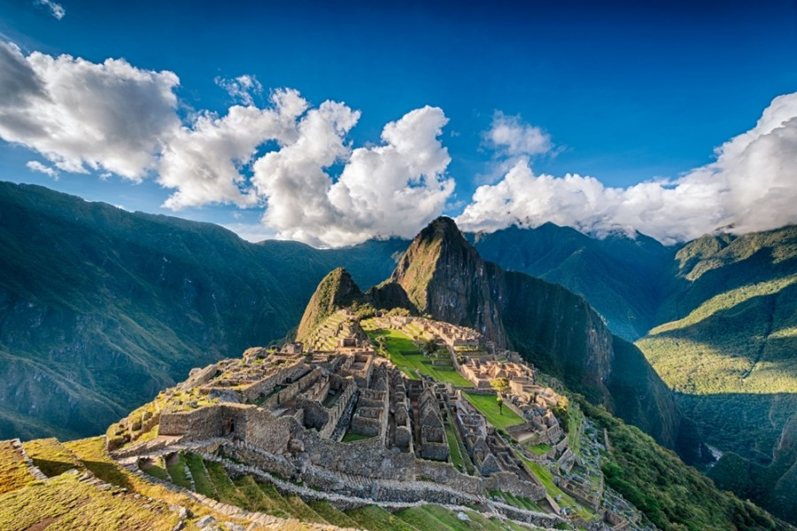
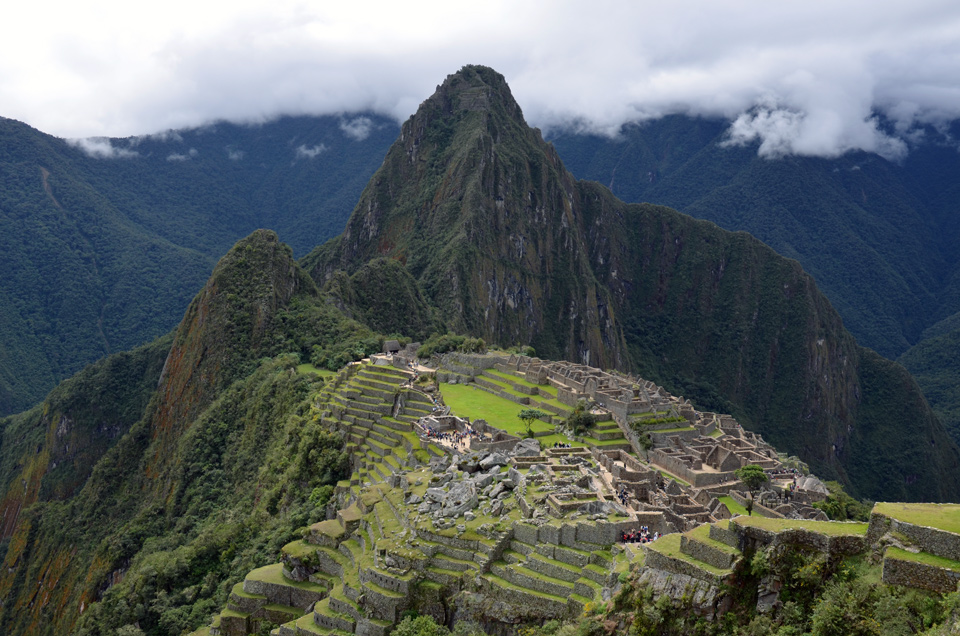
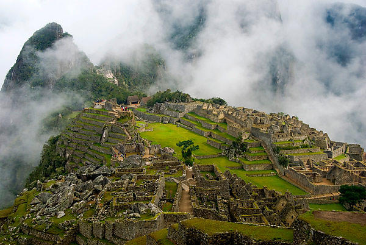

Kristaus Atpirkėjo statula
Maču Pikču
Maču Pikču (isp. Machu Picchu, keč. Machu Pikchu) – inkų XV – XVI a. tvirtovės griuvėsiai Peru, Maču Pikču kalno šlaite, 2350 m aukštyje virš jūros lygio, prie Urubambos upės, 70 km į šiaurę nuo Kusko.


Maču Pikču (kečujų kalba reiškia „senasis kalnas“) dar vadinamas prarastuoju inkų miestu. Jis buvo atrastas 1911 m. ekspedicijos, kuriai vadovavo Hiramas Bingamas, metu. Mieste buvo rasta šventyklų komplekso, diduomenės pastatų, gyvenamųjų namų, sandėlių, gynybinių sienų iš aptašytų akmens blokų, vandens surinkimo įrenginių, kanalų, akmeninių laiptų, kelių, išklotų akmeninėmis plytomis, šlaituose išdėstytų terasų liekanų.
Miestas apytikriai buvo įkurtas 1440 m. ir gyvavo iki 1532 m., kuomet į inkų gyvenamą teritoriją įsiveržė ispanų konkistadorai. Tačiau konkistadorai miesto nenukariavo ir nesugriovė. 1532 m. visi Maču Pikču gyventojai paslaptingai išnyko.
